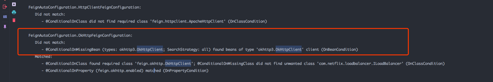

最近项目中使用了feign当做http请求工具来使用、相对于httpclient、resttemplate来说，fegin用起来方便很多。然后项目有httptrace的需求，需要输出请求日志。所以就开启了feign自己的日志，发现它自带的日志是debug级别才能打印。而且是逐行打印的，看日志非常的不方便。所以需要输出json格式的日志最好。
<dependency>
<groupId>org.springframework.cloud</groupId>
<artifactId>spring-cloud-starter-openfeign</artifactId>
</dependency>
<dependencyManagement>
<dependencies>
<dependency>
<groupId>org.springframework.cloud</groupId>
<artifactId>spring-cloud-dependencies</artifactId>
<version>${自行选择适合项目的版本}</version>
<type>pom</type>
<scope>import</scope>
</dependency>
</dependencies>
</dependencyManagement>这里使用了spring-cloud-openfeing来避免自己手工实现feign的注入，用法上和feign一样
在入口类上添加 @EnableFeignClients 注解
@SpringBootApplication
@EnableFeignClients
public class Application {
public static void main(String[] args) {
SpringApplication.run(Application.class, args);
}
}使用feing自己的Contract，方便使用feign自己的注解来声明http接口。这里使用了一个配置类
@Configuration
public class FeignConfig {
@Bean
public Contract feignContract() {
return new feign.Contract.Default();
}
}只需要声明一个带有@FeignClient注解的接口，就声明好了一个Feign的http请求接口
@FeignClient(name = "accessPlatform", url = "${url.access-platform}")
public interface AccessPlatformFeignClient {
@RequestLine("GET /access-platform/resource")
List<AccessResource> queryResourceList(@QueryMap Map<String, Object> query);
}
由于feign自带的http客户端实现是HttpURLConnection，没有连接池功能，可配置能力也比较差，因此我们使用okhttp作为底层的http客户端的具体实现。
<dependency>
<groupId>io.github.openfeign</groupId>
<artifactId>feign-okhttp</artifactId>
<version>${feign-okhttp.version}</version>
</dependency>问题就出在这里、不过先不急，我们继续
@Configuration
@ConditionalOnClass(Feign.class)
@AutoConfigureBefore(FeignAutoConfiguration.class)
public class FeignConfig {
// 注入feignContract
@Bean
public Contract feignContract() {
return new feign.Contract.Default();
}
// 注入自定义的okHttpClient
@Bean
public okhttp3.OkHttpClient okHttpClient(){
return new okhttp3.OkHttpClient.Builder()
.readTimeout(60, TimeUnit.SECONDS)
.connectTimeout(60, TimeUnit.SECONDS)
.writeTimeout(120, TimeUnit.SECONDS)
.connectionPool(new ConnectionPool())
.build();
}
}开启okhttp作为feign的客户端
# application.yml
feign:
okhttp:
enabled: true一切完美、网上的许多博客也都是这么写的。然后它们告诉你已经配置完了？呵呵，你们到底自己试过没有？？
当然这里出问题了，发出的请求并非来自okhttp，还是默认的JDK的HttpURLConnection，问题出在哪里呢？接着看
我怀疑是feing在注入配置的时候，根本就没有运行关于okhttp的配置
1.将服务根日志级别调整为debug级别
logging:
level:
root: debug2.启动服务、查看控制台输出

看到没，okhttp的配置不符合配置运行条件。
3.查询 FeignAutoConfiguration 这个配置类的细节
@Configuration
@ConditionalOnClass({Feign.class})
@EnableConfigurationProperties({FeignClientProperties.class, FeignHttpClientProperties.class})
public class FeignAutoConfiguration {
// .....其他的配置
@Configuration
@ConditionalOnClass({OkHttpClient.class})
@ConditionalOnMissingClass({"com.netflix.loadbalancer.ILoadBalancer"})
@ConditionalOnMissingBean({okhttp3.OkHttpClient.class})
@ConditionalOnProperty({"feign.okhttp.enabled"})
protected static class OkHttpFeignConfiguration {
// ...okhttp的配置
}
// .....其他的配置
}就是这个自动配置类搞的鬼、当我看到 @ConditionalOnMissingBean({okhttp3.OkHttpClient.class}) 这个注解时，我就明白了。
翻成白话就是，只有当容器中没有OkHttpClient的实例时。他才会运行。如果在 FeignAutoConfiguration之前注入了我们自己定义的OkHttpClient实例，那不好意思，我不干了？无不注入。
既然自动配置不干，那我们自己动手干。拷贝 FeignAutoConfiguration 配置类中的配置过程，粘贴在FeignConfig配置类中手动注入feign的client。Ok！完美解决。
@Configuration
@ConditionalOnClass(Feign.class)
@AutoConfigureAfter(FeignAutoConfiguration.class)
public class FeignConfig {
// private okhttp3.OkHttpClient okHttpClient;
@Bean
public Contract feignContract() {
return new feign.Contract.Default();
}
@Bean
@ConditionalOnMissingBean({Client.class})
public Client feignClient(okhttp3.OkHttpClient client) {
return new feign.okhttp.OkHttpClient(client);
}
@Bean
@ConditionalOnMissingBean({ConnectionPool.class})
public ConnectionPool httpClientConnectionPool(FeignHttpClientProperties httpClientProperties, OkHttpClientConnectionPoolFactory connectionPoolFactory) {
Integer maxTotalConnections = httpClientProperties.getMaxConnections();
Long timeToLive = httpClientProperties.getTimeToLive();
TimeUnit ttlUnit = httpClientProperties.getTimeToLiveUnit();
return connectionPoolFactory.create(maxTotalConnections, timeToLive, ttlUnit);
}
@Bean
public OkHttpClient client(OkHttpClientFactory httpClientFactory, ConnectionPool connectionPool, FeignHttpClientProperties httpClientProperties) {
Boolean followRedirects = httpClientProperties.isFollowRedirects();
Integer connectTimeout = httpClientProperties.getConnectionTimeout();
Boolean disableSslValidation = httpClientProperties.isDisableSslValidation();
return httpClientFactory.createBuilder(disableSslValidation)
.connectTimeout((long)connectTimeout, TimeUnit.MILLISECONDS)
.followRedirects(followRedirects)
.connectionPool(connectionPool)
.addInterceptor(new OkHttpLogInterceptor()) // 自定义请求日志拦截器
.build();
}
}如果你没有耐心看完所有的过程的话。就记住一句话：用自己手动注入Feign的Client实现，来代替 Feign的自动配置所做的过程就好了。具体的配置请看第5点